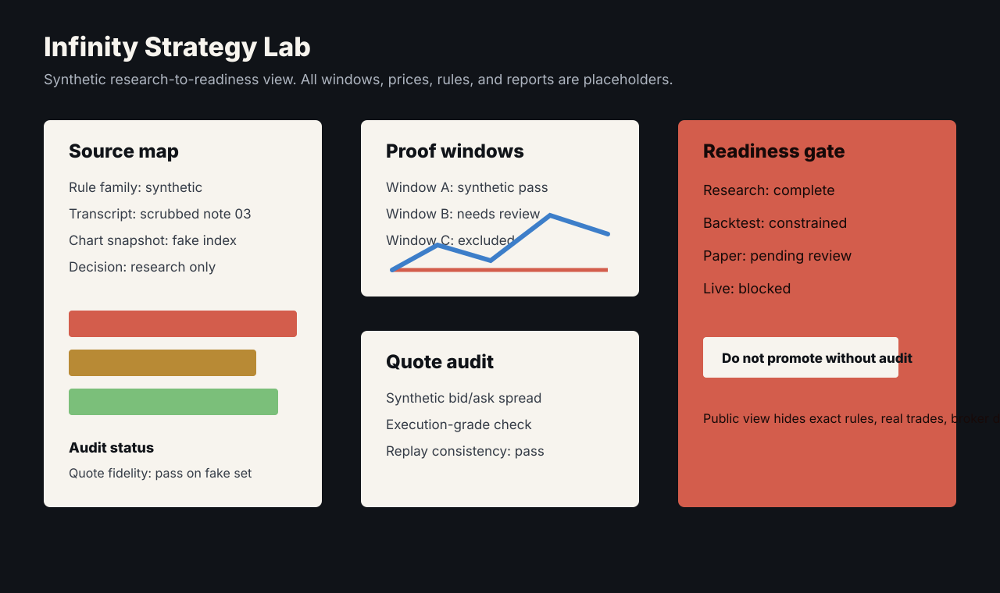
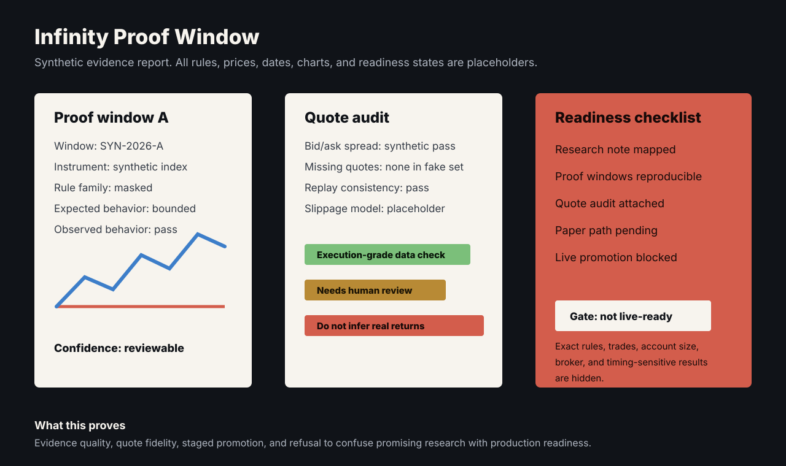
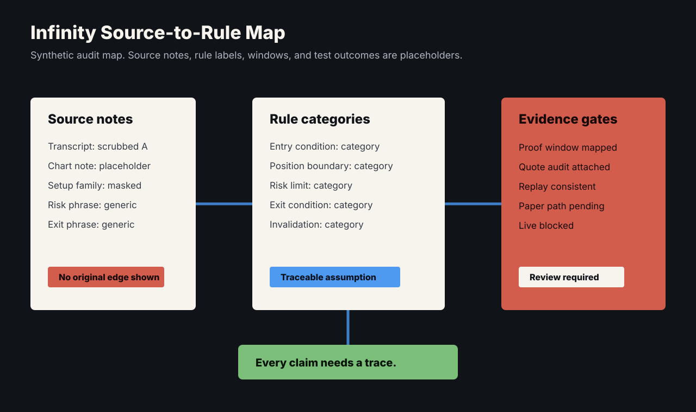

Problem
Strategy research becomes dangerous when attractive results move straight from inspiration to execution. The system has to preserve source material, test fidelity, proof windows, quote quality, and staged readiness.
What I Built
I built Infinity as private options research and execution-readiness infrastructure that treats trading rules as a traceability problem. Every numeric strategy parameter is tied to a primary-source citation, and a static no-uncited-numbers gate enforces it. Performance claims always reference named in-sample and out-of-sample proof windows rather than open-ended history. Dedicated quote audits cross-check modeled fills against real bid/ask history to verify a modeled price was ever actually quoted.
Nothing is asserted without a backing artifact: the system maintains ~276 regenerable evidence artifacts, and promotion toward execution runs through staged readiness gates with a programmatic completion verifier and a kill switch.
System Shape



Technical Decisions
- Keep strategy understanding separate from execution readiness.
- Tie every parameter to a primary-source citation and gate builds on it statically.
- Fix proof windows by name so no claim can quietly cherry-pick its time slice.
- Audit modeled fills against real bid/ask history to avoid misleading backtest confidence.
- Promote only evidence-backed versions through staged gates, verified programmatically, with a kill switch on the far side.
What This Proves
A research-to-live pipeline that treats trading rules as a traceability problem: ~28K lines of Python, 320 tests, ~276 regenerable evidence artifacts, and no path to live orders except through a fixed contract of gates. No parameter without a citation, no claim without an artifact.
Public Evidence
- Fake-data strategy lab screen included.
- Proof-window report represented in the lab view.
- Quote-audit view with synthetic prices included.
- Readiness checklist represented in the gate view.
- Source-to-rule traceability map included.
Privacy Boundary
Strategy rules, real trade data, account scale, broker details, source material, and results stay private. The screens above use synthetic data. The traceability system — citations, proof windows, quote audits, readiness gates — can be walked through live, on request.